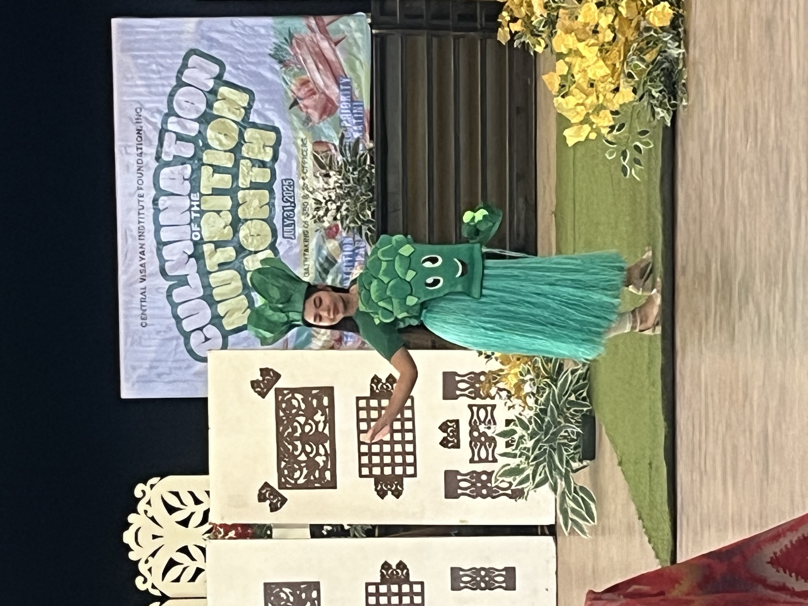
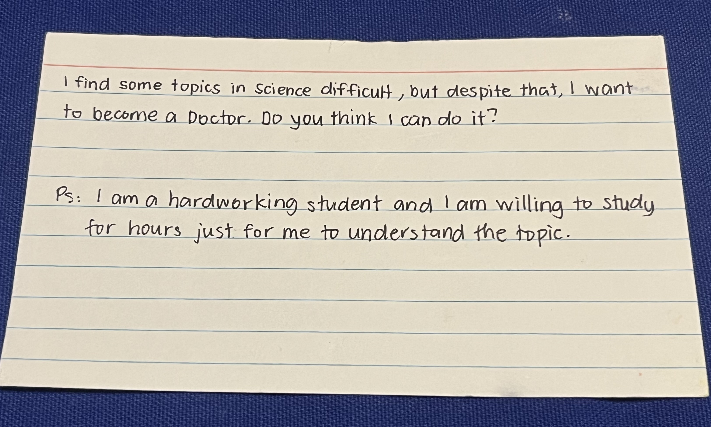
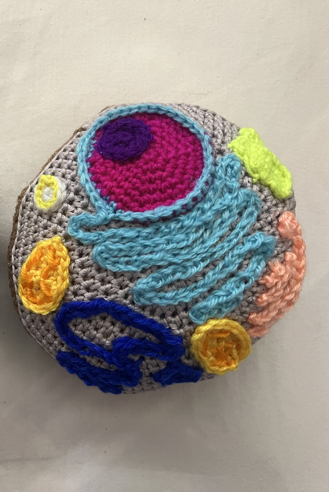

With each passing day of my second month in Jagna, I feel more and more at home. The ocean view from the backyard never fails to captivate me, as does the warmth and generosity of the locals, the lami food, and the richness of the culture. Being here makes me feel closer to my grandmother and deeply appreciative of my journey so far.
My second month began with the CVIF Nutrition Month Culmination program, where students proudly showcased their intricately made fruit and vegetable costumes and strutted the "runway" at the Jagna Cultural Center. The detail, dedication, and creativity in their designs were so exciting to witness. More importantly, it reminded me that "health is wealth" — and that I should probably start working off all the pancit and rice I've been enjoying lately.

While the costumes and celebrations were fun to see, the heart of my Jagna experience has truly been in the classroom. Teaching at CVIF has given me a new perspective on both my students and myself. One of my goals during this second month was to get to know my students better, and for them to know me as well. Normally, I'm quite the introvert, but when I step into the classroom, I can feel their excitement as we prepare to dive into biology and research topics.
One activity I had them do was to write questions for me on index cards — ranging from why I'm here in Jagna, to my career path, to my love for crocheting. Their questions were thoughtful and showed genuine curiosity about my life as a scientist, about careers in science and medicine, and about my perspective on the Philippines so far. I'm definitely looking forward to answering them in future classes.

The students' curiosity reminded me why I love teaching science in the first place. In my biology and research classes, I've been able to connect various topics to the real world while gauging how students think about them. In biology we've covered everything from how disruptions in the cell cycle can lead to cancer to why cells evolved with different structural modifications. The students even debated — quite excitedly — whether gap junctions or tight junctions are more important (spoiler: both are crucial).
In the research class, I highlighted the importance of crafting a strong research question and hypothesis, drawing on an example from my previous retina research during my postdoc. And of course, I just had to crochet a model of a cell and an eye for the students to enjoy during class!

Remember when I said in my first blog that I couldn't wait to see what new adventures lay ahead? My second month here has delivered. I took my very first ferry ride to a neighboring island, explored new beaches, and found myself navigating the wonderfully unpredictable rhythms of Philippine island life with growing confidence.
I came here thinking I would teach science. What I didn't fully anticipate was how much I would learn — from my students, from the community, and from this place itself. Month two has been a gift, and I can't wait for what month three will bring.
— DaNae Woodard, Science Corps Fellow at CVIF, Jagna, Philippines (June–Dec 2025)